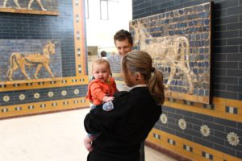
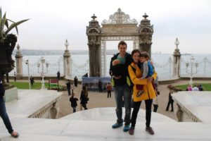
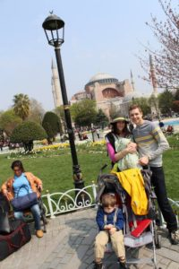
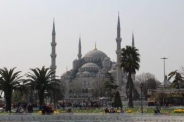
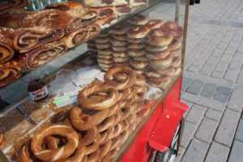

When we first told our family that we were headed to Turkey and Greece on vacation they had quite a few concerns in regards to the political unrest in Istanbul. However, we had done our research and surmised that it was safe and obviously we would not be involved in any protests. Well, we got to Istanbul and it was safe, not a hint of any kind of trouble; but it was a culture shock in other ways!
People in Turkey absolutely LOVE children. Young, old, middle-aged, men, women: everyone loves children. Our children were constantly being touched and held. Coming from America where everyone is very mindful of personal space it was a huge shock. However, at the end of it I began to appreciate how much people loved my children; it warmed my heart. I would suggest making sure you bring a lot of hand sanitizer because by the end of the trip everyone was sick! When you travel in Turkey with children it affords you to skip through security and often head to the front of lines. Even when my husband was pushing the stroller, they would stop him, say "Where is the mother?", and then the kids and I would be waived through while my husband had to go through the check! Be prepared for people to give you food and gifts. This was often the case and I just accepted them graciously.
[caption id="attachment_483" align="aligncenter" width="300"] Museum guard holding Isla[/caption]
{kind=link}
Getting around Istanbul with a side by side umbrella stroller was the most difficult part. The sidewalks are very narrow in some parts of the city. I would suggest a compact stroller for the city, one that folds down easily. The public transportation is exceptional with a metro and tram that covered a lot of the city and goes directly to the airport. It can get crowded but because you have children they are very accommodating and helpful with picking it up or moving out of the way. Note that there is usually only one disabled/stroller entrance/exit to the tram stops, and that if you have two adults traveling, the one not pushing the stroller will have to go through the turnstile.
[caption id="attachment_482" align="aligncenter" width="300"] Side of Topakapi Palace[/caption]
{kind=link}
In Istanbul we visited Topakapi Palace, Archaeological museum, Sofia Hagia, Blue Mosque, and the Grand Baazar. The museums were outstanding, particularly the Archaeological museum. It was a bit disappointing that it was under construction but what was open was breathtaking. The kids are very well behaved in museums and they were spacious easy to navigate with a stroller. The guards at all the museums were very friendly and not intrusive (will write more about this in my Greece post). There is a ton to see so be prepared to have your walking legs ready. The city is an explosion of color and activity.
[caption id="attachment_486" align="aligncenter" width="200"] In front of the Hagia Sofia[/caption]
{kind=link}
Now for accommodation in Istanbul. I would really not recommend either of our hotels. The Sultanahmet Suites were clean but you would not believe the steep stairs we had to mount to the 5th floor. While carrying two children this can get quite difficult. The Emin Hotel was really not the cleanest and I was very happy to leave that one and I try to forget that aspect of our trip. I would suggest being very wary when reading reviews and if at all possible use Trip Advisor and message past guests directly to get their opinions.
[caption id="attachment_485" align="aligncenter" width="300"] Blue Mosque[/caption]
{kind=link}
The food of Istanbul was okay. There are a lot of vendors to buy from and food can be fairly inexpensive if you stay away from the more touristy sections. We generally like to shop at grocery stores for a lot of our food on trips but Istanbul did not have any big ones like other European cities. It was mostly smaller, pricier markets without a lot of options. Turkish pizza (5TL, or $2.50, in Ephesus) was by far our favorite food. We also frequently bought simits (circular bread with sesame seeds) at stands near tourist areas for 1TL, or about $0.50.
[caption id="attachment_484" align="aligncenter" width="300"] Simit, simit![/caption]
{kind=link}
Overall, we thoroughly enjoyed our time in Istanbul. If you are expecting it to be like other European cities then you will be disappointed and should prepare for culture shock. Still, we appreciate this great city for all it has to offer. Has anyone visited Istanbul? Have you had a similar experience?